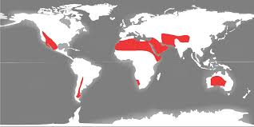

Raksturojums
Tuksneši un pustuksneši ir reģioni ar ļoti zemu nokrišņu daudzumu. Tiem raksturīgas ārkārtīgas temperatūras svārstības dienas un nakts laikā.

Ģeogrāfiskā izplatība
Ar sarkanu ir iezīmēti tuksneši.Klimats
Tuksneši un pustuksneši ir sausākās vietas uz Zemes, kur valda liels karstums dienās un aukstums naktīs. Temperatūra var sasniegt virs 40°C dienā un nokrist zem 0°C naktī. Nokrišņu daudzums ir zem 250 mm gadā.
Augsnes
Augsne ir ļoti neauglīga un bieži to klāj arī sāls kārta. Vietām aug vērmeles, sīki ērkšķu krūmi un kaktusi.
Raksturīgākie augi

Raksturīgākie dzīvnieki
Tuksneši ir ļoti nelabvēlīgi dzīvniekiem karstuma, ūdens un barības trūkuma dēļ, taču ir dzīvnieki, kas ir pielāgojušies dzīvei tik ekstrēmos apstākļos. Te dzīvo kamieļi, kas savos kupros uzkrāj tauku rezerves, lai izturētu karstumu un ēdiena trūkumu. Feneka lapsas un Meksikas koijoti dzīvei karstumā ir pielāgojušies ar savām lielajām ausīm, kas palīdz atvēsināt ķermeņus.

Cilvēku nodarbošanās
Cilvēku dzīvei tuksneši nav labvēlīgi, taču tie dzīvo arī šeit - klejotāji lopkopji audzē kamieļus, kazas un aitas. Savukārt, oāzēs - vietās, kur tuksnesī ir ūdens, cilvēki audzē rīsus, kokvilnu un dateļpalmas.